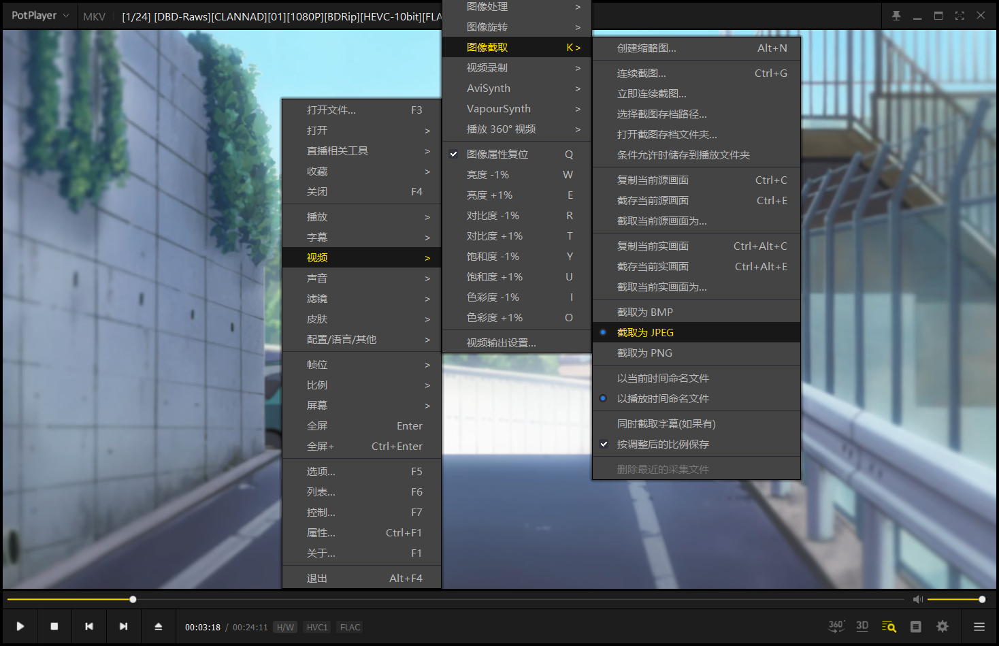

Anitabi 圣地巡礼地图：我踩过的 5 个坑
以为 Anitabi 就是打开地图搜作品那么简单？我用了快一年，前后踩了五六个坑，从主域打不开到截图审核被打回，每次都以为自己操作错了。把这些经验整理出来，帮你少走弯路。
开头：这个地图看着简单，其实有几个坑
第一次打开 anitabi官网 的时候我觉得这就是个"把动漫取景地标在地图上"的网站，能有什么难的？直到我连续三次提交截图都被打回、主域整整一周打不开、搜《吹响吧！上低音号》搜不到完整中文名……才发现它的坑藏在架构细节里——而且大部分都不是 Bug，是设计选择。
这篇把我踩过的坑逐个列出来，每条都讲清楚：你看到什么不对劲（症状）、为什么会这样（原因）、怎么救或者怎么提前避开（解法）。
坑一：主域 anitabi.cn 打不开
症状：浏览器里输入 anitabi.cn，页面一直转圈或者直接"无法访问"。福建、广东、贵州这几个地区的朋友反馈最多，我人在深圳，2024 年 5 月遇到过整整五天打不开。
原因：主域被网络限制了。这不是你家宽带的问题，也不是网站挂了——Anitabi 的数据 API 和图片 API 走的是独立域名（api.anitabi.cn 和 image.anitabi.cn），所以主域挂了其实数据层一点不受影响，只是前端入口断了。
解法：直接换备用地址 w.anitabi.cn/map。官方在 2024 年 5 月更新里明确提了这个备用入口，功能和主域完全一致，就是域名不同。我现在浏览器收藏夹里同时存着两个，哪个能用用哪个。
如果换了备用地址还是卡，试试清浏览器缓存（Ctrl+Shift+Delete）或者换 Edge/Chrome——这俩浏览器对地图组件兼容性最好，Safari 偶尔也会出点小问题。
坑二：搜不到某个作品
症状：搜索框里输了作品名，回车之后一片空白，或者能搜到作品点进去发现地标数是 0。我第一次搜《吹响吧！上低音号》就是这个情况。
原因：Anitabi 的全部作品元数据（中文名、原名、封面、类型、开播日期）都从番组计划 Bangumi 同步。这意味着 Bangumi 上有 Subject 条目，Anitabi 就能搜到；Bangumi 上没有，Anitabi 也搜不到。搜不到分两种情况：
- 搜名字完全没结果 → Bangumi 上也没有这个作品的 Subject 条目
- 能搜到作品但地标为 0 → Bangumi 有，但还没人在 Anitabi 贡献过取景地标
解法：先判断是哪种。如果是前者，你需要先去 Bangumi（bangumi.tv）注册账号，登录后右上角头像 → 编辑数据 → 新建条目，填好原名、中文名、类型、开播日期和封面，提交等社区审核通过。审核过了拿到 Subject 链接（格式是 bangumi.tv/subject/{subjectID}），回 Anitabi 搜索框直接粘这个链接，回车就自动创建作品了。
如果是后者——恭喜，这说明你可以成为第一个给这个作品加地标的人。不过我要提醒你，Bangumi 的编辑社区很严格，别乱建条目，信息不全的会被删，我见过有人因为乱建被警告过。
还有个搜索小技巧——更多进阶用法可以翻anitabi文档，这里说几个最实用的：搜作品名搜不到的时候，试试直接粘 Subject ID 数字，或者换简称——《吹响吧！上低音号》搜"京吹"有时候反而更准，它后台有缩写名（SHN）做映射。
坑三：截图上传了但地图上不显示
症状：PotPlayer 截好帧、上传按钮点了、提交也没报错，结果回到地图一看——我加的地标在哪？刷新了还是没有。我第一次贡献鬼灭之刃截图的时候遇到这个，以为自己传了个寂寞。
原因：不是没传上，是在排队审核。Anitabi 所有地标投稿都要过社区志愿者审核，热门番审核量大，等个三到七天是正常的。我那次鬼灭就是等了五天，差点以为被打回了。
不过审核被打回也是常事，最常见的几个原因：
- 带播放器 UI（进度条、弹幕、水印）→ 直接打回
- 手机截屏 → 弹确认框，大概率被打回
- 非 16:9 比例 → 建议裁剪，不裁也能过但展示效果差
- EP 和时间戳填错了 → PotPlayer 截的一般没问题（文件名自动带时间），手动填的容易错
- 来源没填 → 提交时来源是必填项，说明你从哪知道这个地标的（Google Maps、自己实地拍的、某巡礼攻略），不填审核员直接打回
解法：先等等，热门番 3 到 7 天，冷门番可能更快也可能超慢（没人审）。等了一周还不显示，查一下邮件或站内通知——大概率是被打回了，按上面的原因自查一下。重截的时候记得 PotPlayer 截帧最省心，文件名自动带时间，不用手动填。
坑四：地图加载特别慢，缩略图半天出不来
症状：打开地图之后，全球视图是一堆灰点，地标缩略图要等十几秒才慢慢冒出来；放大到街道级卡得动不了。我第一次用手机 4G 打开的时候差点以为这网站做崩了。
原因：Anitabi 的地图第一次打开要加载所有地图瓦片和地标缩略图，数据量不小。不过官方一直在优化：2024 年 5 月把地图文字渲染改成了本地字形、图标从自有服务器加载，减少了跨域请求；7 月又做了更激进的低缩放优化——全球/全国视图下只显示地标圆点和作品主色，拉近到城市级别才显示缩略图。
解法：几个实用小技巧：
- 第一次打开先停在全球级，等缩略图慢慢出现，别一上来就放大到街道级别
- 用桌面浏览器 + 有线网络，比手机 4G/5G 稳得多
- 清一下浏览器缓存再试试（Ctrl+Shift+Delete）
- 移动端 App 从官方下载（iOS / Android）通常比网页端快，因为 App 有本地存储
- 如果从日本、台湾、香港访问，2024 年 7 月之后图片做了 CDN 加速，截图加载比以前顺畅多了
坑五：我能看到地标，但朋友看不到
症状：提交地标之后，我自己登录状态下在编辑模式能看到，但发链接给朋友说"你看我加的这个镰仓高校前"，朋友点开地图根本找不到。
原因：这是审核状态的显示差异。提交后你自己在编辑模式下能看到未审核的投稿，但其他任何人（包括没登录的你自己换个浏览器）都看不到。要等审核正式通过，地标才会对所有人可见。还有一种情况是审核刚通过，CDN 缓存还没刷新，等几分钟让朋友刷新试试。
解法：别慌，等审核过了自然就对所有人可见了。如果急着让朋友看看，发你自己编辑模式下的截图倒是可以的。

防坑清单（速查）
- 主域打不开就换 w.anitabi.cn/map 备用地址，数据 API 和图片 API 不受影响
- 搜不到作品先去 Bangumi 查，Bangumi 有 Subject 条目才能搜到；粘贴 Subject ID 比搜名字准
- 截图上传后等 3~7 天审核，被打回先检查格式（16:9、无播放器 UI、来源必填）
- 地图加载慢先停全球级等缩略图，桌面浏览器 + 有线网络体验最好
- 自己能看到地标朋友看不到是正常的，审核通过前只有提交者编辑模式可见
知道这些坑之后，Anitabi 其实相当省心——架构清楚、社区活跃，贡献地标这件事本身也就变得有章可循了。这套资料在 GitHub、Gitee、GitCode 三个仓库都能拿到，国内访问走后两个更快。